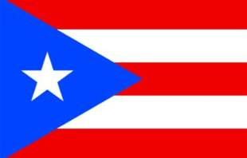
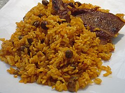

Personal Website
A website introducing my interests, skills, and goals.
Go to My BlogA website introducing my interests, skills, and goals.
Go to My BlogTo tell you the truth the place that I love spend time and money to visit is my hometown Puerto Rico. I love to visit my family, the Old San Juan, eat china food, my favorite food there, all kind of food, the mofongo. The beach there is also a favorite spot for relaxation.

The climate of Puerto Rico in the Köppen climate classification is mostly tropical rainforest. Temperatures are warm to hot year round, averaging near 85 °F (29 °C) in lower elevations and 70 °F (21 °C) in the mountains. Easterly trade winds pass across the island year round. Between the cold and warm I live the hot season.
Puerto Rico has many symbols, but only the Flor de Maga has been made official. Other popular, traditional, or unofficial symbols of Puerto Rico are the Puerto Rican spindalis, the kapok tree, the coquí frog, the jíbaro, the Taíno Indian, and Cerro Las Tetas with its jíbaro culture monument.
Old San Juan is one of the two barrios, in addition to Santurce, that made up the municipality of San Juan from 1864 to 1951, at which time the former independent municipality of Río Piedras was annexed. With its abundance of shops, historic places, museums, open air cafés, restaurants, gracious homes, tree-shaded plazas, and its old beauty and architectonical peculiarity, Old San Juan is a main spot for local and internal tourism. The district is also characterized by numerous public plazas and churches including San José Church and the Cathedral of San Juan Bautista, which contains the tomb of the Spanish explorer Juan Ponce de León. It also houses the oldest Catholic school for elementary education in Puerto Rico, the Colegio de Párvulos, built in 1865. The oldest parts of the district of Old San Juan remain partly enclosed by massive walls. Several defensive structures and notable forts, such as the emblematic Fort San Felipe del Morro, Fort San Cristóbal, and El Palacio de Santa Catalina, also known as La Fortaleza, acted as the primary defenses of the settlement which was subjected to numerous attacks. La Fortaleza continues to serve also as the executive mansion for the governor of Puerto Rico. Many of the historic fortifications are part of San Juan National Historic Site.

Puerto Rican cuisine has its roots in the cooking traditions and practices of Europe (Spain), Africa and Taíno. Basic ingredients include grains and legumes, herbs and spices, starchy tropical tubers, vegetables, meat and poultry, seafood and shellfish, and fruits. Main dishes include mofongo, arroz con gandules, pasteles, and pig roast (or lechón). Beverages include maví and piña colada. Desserts include flan, arroz con dulce (sweet rice pudding), piraguas, brazo gitanos, tembleque, polvorones, and dulce de leche.
